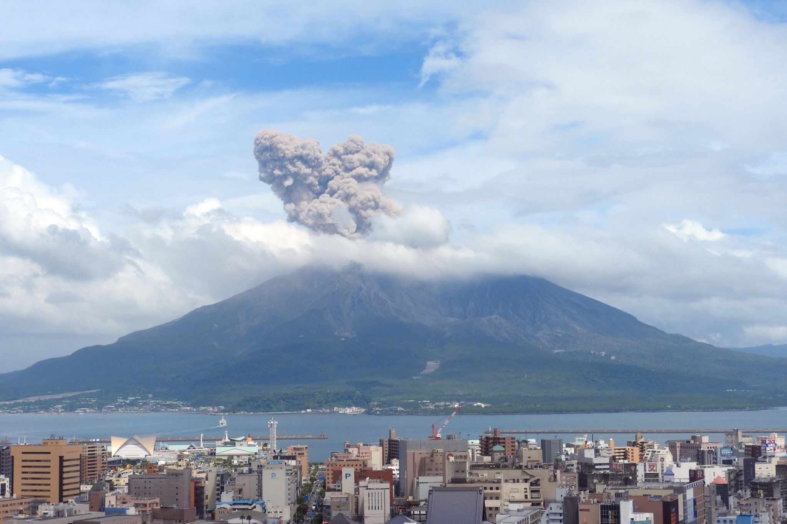

Sakurajima

Description
Sakurajima (Japanese: 桜島, lit. 'Cherry Blossom Island') is an active stratovolcano, formerly an island and now a peninsula, in Kagoshima Prefecture in Kyushu, Japan. The lava flows of the 1914 eruption connected it with the Ōsumi Peninsula. It is the most active volcano in Japan.
History
Sakurajima began forming approximately 13,000 years ago; prior to 1914, it was an island in Kagoshima Bay. Sakurajima was joined to the mainland by the deposition of volcanic material following a major eruption in 1914. Several craters lie near the 1,117-meter summit of Sakurajima.